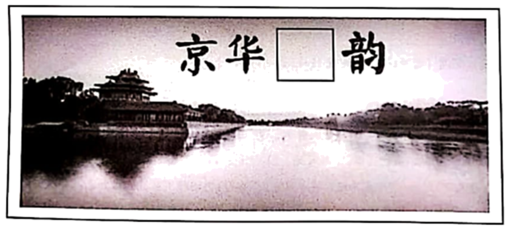

2020年北京市中考语文试题 原卷解析
2020年北京市中考
语 文 试 卷
考生须知：
1.本试卷共12页，共五道大题，24道小题，满分100分。考试时间150分钟。
2.在试卷和草稿纸上准确填写姓名、准考证号、考场号和座位号。
3.试题答案一律填涂或书写在答题卡上，在试卷上作答无效。
4.在答题卡上，选择题用2B铅笔作答，其他试题用黑色字迹签字笔作答。
5.考试结束，将本试卷、答题卡和草稿纸一并交回。
一、基础·运用（共14分）
2020年“中国水周”的主题是“坚持节水优先，建设幸福河湖”。学校组织同学们参与“中国水周”的宣传，准备举办“京华水韵”展览。请你完成下列任务。
1. 同学们准备从书法作品中搜集单字组成展板标题，对于“水”字的选择产生了争议。请你依据“字体一致，和谐美观”的原则，选择最恰当的一项。（ ）

A.  B.
B.  C.
C.  D.
D. 
2. 一位同学负责拟写并讲解前言。请阅读这段文字，完成各题。
“春湖落日水拖蓝，天影楼台上下涵。十里青山行画里，双飞白乌似江南。”明代书画家文徵明曾在诗中生动地描绘了北京的湖光山色【甲】据考证，古都北京既有海淀、南海子等众多水泊湿地，也有无数水井和泉池；既有宽阔繁忙的运河水道，也有难以计数的古桥闸口。你也许会想北京是否有过这般“似江南”的水乡泽国之景【乙】让我们开启一段时光之旅，寻访京城水脉，感受京华水韵。
（1）这位同学对文段中两个加点字的意思和读音，以及【甲】【乙】两处的标点产生了疑问。请你帮他选出判断正确的一项。（ ）
A. “行”在诗中是“流通”的意思，应读xíng。 B. “泊”在此处是“湖”的意思，应读bó。
C. 【甲】处应填入句号，表示陈述语气 D.【乙】处应填入问号，表示疑问语气。
D.【乙】处应填入问号，表示疑问语气。
（2）为了向参观者讲解“泽国”的意思，这位同学查阅字典，找到“国”字的三个解释：①国家：②国都，京城：③地域。请你帮他解释“泽国”在此处的意思。
3. 展览内容分三个单元，同学们为这三个单元分别拟写了标题和引言。阅读文段，完成各题。
第一单元 ① ，碧水润京城
古永定河的冲积与改道，为北京提供了肥沃的土地，留下了大量湖沼和丰富的地下水。战国时期，蓟运河水系就已开通水路运输。元明清三朝，京杭大运河成为连接南北经济、保障京城物资输送的交通大动脉。今天，潮白河水系承担着为北京输送生产生活用水的重任，是首都的生命线。在北京3000多年的建城史、800多年的建都史上，这些水系发挥了重要作用，滋养了古老的幽燕大地。
第二单元 ② ，生态治河湖
北京是一座人口超两千万的特大型城市。为保障城市供水，管理者着力建构多水源保障体系，并努力建设节水型社会。如今，南水北调工程已使上千万人直接受益，北京也连续十七年保持“全国节水型城市”称号。要保障水资源，也要改善水环境。用生态的办法治理生态问题，让许多河湖告别了“亚健康”，水生态系统生物多样性明显提高。北京有信心打好这场碧水保卫战，交出一份出色的答卷。
第三单元 人水相亲，古都添画意
①生态补水后的永定河重新焕发青春，绿头鸭、白天鹅逐水而来，给京城增添了勃勃生机。②经过治理的大运河碧波荡漾，人们可以观赏白鹭在河面翩翩起舞，体会与自然和谐相处的美好。③遁入地下多年的转河“重见天日”，河水清浅，弱柳扶风，像一幅恢宏壮丽的画卷，让人们感到别样的清新。④曾经被填埋地下近半个世纪的玉河，如今穿街走巷，波光粼粼，宛如闹市中的一条玉带，成为人们休憩的好去处。
（1）同学们就第一单元和第二单元标题的拟定展开讨论，你认为下列选填词语最恰当的一项是（ ）
A.①源远流长 ②开源节流 B.①源源不断 ②开源节流
C.①源远流长 ②细水长流 D.①源源不断 ②细水长流
（2）第三单元引言的四个句子都运用了修辞方法，你认为其中修辞方法运用不恰当的一句是（ ）
A.第①句 B.第②句 C.第③句 D.第④句
4. 下面这段文字是为展览拟写的结语。根据语境，画线的句子表达欠妥，请你帮助修改。
①“坚持节水优先，建设幸福河湖”，是2020年“中国水周”的主题，也是北京治水工作的重要内容。②坚持节水优先，并非简单地限制用水，而是合理用水，高效用水。③治理河湖，也并非单纯地治污补水，还包括用生态的方法解决生态问题，让河湖成为人们的幸福源泉。④建设幸福河湖，满足百姓美好生活愿景；节约用水，助力首都水资源保障。⑤请和我们一起节约用水，共绘幸福河湖画卷，让首都北京水韵绵长。
5. 通过筹办“京华水韵”展览，同学们对2020年“中国水周”的主题“坚持节水优先，建设幸福河湖”有了真切的感受。请用“虽然……但是……”的句式，写出你的感受。
【答案】1. B 2. （1）C （2）泽国：多水的地域
3. （1）A （2）C
4. 节约用水，助力首都水资源保障：建设幸福河湖，满足百姓美好生活愿景。
5. 示例1：坚持节水优先虽然可能会带来暂时的不便，但是从长远来看，建设幸福河湖更有利于可持续发展。
示例2：虽然治理水环境仍然任重而道远，但是我相信通过大家的努力，碧水清韵的北京，一定会重现。
【解析】
【1题详解】
本题考查书法字体。书法字体，传统讲共有行书字体、草书字体、隶书字体、篆书字体和楷书字体五种。书法作品中的“京、华、韵”三个字，横平竖直，规矩整齐，是楷体。这四个“水”分别是A.蚕头雁尾应为隶书、B.楷书、C.行书、D.草书。故本题选B。
【2题详解】
（1）本题考查字词读音、释义，标点符号的用法。
A.“十里青山行画里”意思是在十里青山中，像在画中行走一样，“行”是“行走”的意思，解释不正确，排除；
B.“水泊湿地”中，“泊”是“湖”的意思，应读pō，读音不正确，排除；
C.“明代书画家文徵明曾在诗中生动地描绘了北京的湖光山色”是陈述句，与前面的描写是一个完整的句子，此处结束，故【甲】处应填的是句号，正确；
D.“你也许会想北京是否有过这般‘似江南’的水乡泽国之景”，这是一句陈述句，因此句末【乙】处还是使用句号。选项不正确；
故本题选C。
（2）本题考查字词释义。水乡泽国：这是一个并列式词语，意思是大小湖泊、河川、渠道，密如蛛网的地域。再根据前文“水井泉池、运河水道、古桥闸口”可以判断，这里的“国”的含义不在于国家（仅指北京地区），也不在于强调“首都”，而是指“多水的地域”因此，“国”的义项应为③地域。泽国：多水的地域。
【3题详解】
（1）本题考查标题的拟定。
源远流长：源头很远，水流很长，比喻历史悠久，根底深厚。从第一单元“战国时期，蓟运河水系就已开通水路运输”“元明清三朝”“在北京3000多年的建城史、800多年的建都史上”等句子中，可以看出，水的历史悠久，因此①处选“源远流长”符合内容所写；
开源节流：开发水源，节制水流。比喻增加收入，节省开支。从第二单元“构建多重保障体系，努力建设节水社会”可以看出，节约用水是这单元前半部分的主要内容，因此②处应填“开源节流”；故本题选A。
源源不断：形容接连不断、连绵不绝。多用于事物，不用于人。
细水长流：“细水长流”比喻节约使用财物，使经常不缺用。也比喻一点一滴不断地做某件事，精细安排，长远打算。在此处只对应材料中 “节约”，略微片面。
“节约”，略微片面。
（2）本题考查修辞方法的辨析。③句中描写遁入地下多年的转河，“河水清浅，弱柳扶风”与后面的比喻“像一幅恢宏壮丽的画卷”不搭，特点不一致。因此本题选C。
【4题详解】
本题考查上下文的连贯性、一致性衔接。从本题第①句“坚持节水优先，建设幸福河湖”可知，节水应该放在前面，幸福河湖放在后面，所以此句的顺序要调整为：节约用水，助力首都水资源保障：建设幸福河湖，满足百姓美好生活愿景。
【5题详解】
本题考查例句仿写。用“虽然……但是……”的句式，写出感受。
示例：虽然河水、湖水治理已经初见成效，碧水蓝天已经随处可见，但是任重而道远，水的治理仍然需要我们坚持不懈地继续努力。
二、古诗文阅读（共17分）
（一）默写。（共4分）
6.（1）其必曰“___________，后天下之乐而乐”乎！（范仲淹《岳阳楼记》）
（2）___________，阴阳割昏晓。（杜甫《望岳》
（3）座右铭是用来激励、警醒自己的格言。如果用两句古诗作为你的座右铭，你选用的诗句是“_______，______”。（本试卷中出现的诗句除外。每句诗中允许有一个不会写的字用拼音替代）
【答案】 (1). 先天下之忧而忧 (2). 造化钟神秀 (3). 千锤万凿出深山 (4). 烈火焚烧若等闲
【解析】
【详解】诗词默写要求：一、不能添字，不能少字；二、字的笔画要准确。注意：造化、千锤万凿、焚烧。选择座右铭诗句时，符合“激励、警醒自己的格言”这个要求都可，注意不能是试卷中出现过的诗句。
（二）（共5分）
阅读《己亥杂诗（其五）》，完成下面小题。
己亥杂诗（其五）
龚自珍
浩荡离愁白日斜，吟鞭东指即天涯。
落红不是无情物，化作春泥更护花。
7. 近代学者王国维在《人间词话》中说“一切景语皆情语”。这首诗的前两句，诗人写到了______的自然之景，抒发了______之情。
8. 孟浩然《春晓》中“夜来风雨声，花落知多少”，与本诗“落红不是无情物，化作春泥更护花”都写到了落花。请简要说明两位诗人分别借“落花”表达了怎样的情感。
【答案】7. (1). 白日西斜，广阔天涯 (2). 离愁的无限感慨与豪放洒脱
8. 龚诗中“落花”本指脱离花枝的花，但是，并非没有感情，而是即使化做春泥，也甘愿培育美丽的春花成长，不为独香，而为护花，表现诗人虽然脱离官场，依然关心着国家的命运，不忘报国之志，以此来表达他至死仍牵挂国家的一腔热情；充分表达诗人的壮怀。孟诗中“落花”则表达了诗人对春天落花的惋惜之情和春光流逝的淡淡哀愁。
【解析】
【7题详解】
本题考查诗词中的意象。（1）首联翻译：浩浩荡荡的离别愁绪向着日落西斜的远处延伸，离开北京，马鞭向东一挥，感觉就是人在天涯一般。这里抓住了“白日西斜”“天涯广阔”的自然景象。（2）“浩荡离愁白日斜”中“浩荡离愁”直接点明了作者对离愁的无限感慨，“吟鞭东指即天涯”则通过“天涯”这个开阔的意象表现了豪放和洒脱。
【8题详解】
本题考查诗歌主题。（1）龚自珍的诗。翻译：我辞官归乡，有如从枝头上掉下来的落花，但它却不是无情之物，化成了春天的泥土，还能起着培育下一代的作用。这里采用了比喻的手法，作者自比为落花，落花从枝头落下，化为肥料，滋养大地，为新花的成长做贡献。作者虽然离开朝廷，但是依然关心国家的前途和命运，依然坚持对理想的追求，表现了一片拳拳爱国之情。（2）孟浩然的诗。翻译：春天睡醒不觉天已大亮，到处是鸟儿清脆的叫声。回想昨夜的阵阵风雨声，吹落了多少芳香的春花。第一联从听觉角度描写了鸟儿清脆的鸣叫，营造了美好的、充满生机的春天的氛围，表达出对春天的喜爱之情，而第二联则从视觉角度，运用联想，写春花被吹落到地的景象。写出了对春花凋零的怜惜，作者喜爱春天，可是春天的花被吹落了，这是否意味着春天的逝去，故表达了对春天落花的惋惜之情和春光流逝的淡淡哀愁。
（三）（共8分）
阅读《曹刿论战》，完成下面小题。
曹刿论战
《左传》
十年春，齐师伐我。公将战，曹刿请见。其乡人曰：“肉食者谋之，又何间焉？”刿曰：“肉食者鄙，未能远谋。”乃入见。问：“何以战？”公曰：“衣食所安，弗敢专也，必以分人。”对曰：“小惠未遍，民弗从也。”公曰：“牺牲玉帛，弗敢加也，必以信。”对曰：“小信未孚，神弗福也。”公曰：“小大之狱，虽不能察，必以情。”对曰：“【甲】忠之属也。可以一战。战则请从。”
公与之乘，战于长勺。公将鼓之。刿曰：“未可。”齐人三鼓。刿曰：“可矣。”齐师败绩。公将驰之。刿曰：“未可。”下视其辙，登轼而望之，曰：“可矣。”遂逐齐师。
既克，公问其故。对曰：“夫战，勇气也。一鼓作气，再而衰，三而竭。彼竭我盈，故克之。夫大国，难测也，惧有伏焉。【乙】吾视其辙乱，望其旗靡，故逐之。”
9. 下列选项中加点字的意思都相同的一项是（ ）
A. 曹刿请见 见多识广 见义勇为 各抒己见
B. 小信未孚 言而有信 杳无音信 信手拈来
C. 公与之乘 乘风破浪 乘虚而入 乘兴而来
D. 遂逐齐师 出师未捷 百万雄师 仁义之师
10. 翻译文中两处画线语句，并依据上下文对其作出进一步理解，全都正确的一项是（ ）
【甲】忠之属也。可以一战。
翻译：（这）是尽职分之类的事情。可凭借（这个条件）打一仗。
理解：曹刿认为鲁庄公能够公正处理百姓的诉讼事件，与“小惠”和“小信”相比，更能赢得百姓的信任，具备了迎战的条件。
【乙】吾视其辙乱，望其旗靡，故逐之。
翻译：我发现他们的车印混乱，军旗也倒下了，所以才下令追击他们。
理解：曹刿能敏锐地观察战场形势的变化，他根据“辙乱”“旗靡”判断齐师撤走了伏兵，认为可以追击敌人了。
11. “位卑未敢忘忧国”意思是虽然身份低微，仍然不忘担忧国事。曹刿一介平民，在国家危难之际，挺身而出，为国解忧。阅读下面两则材料，简要说明“位卑未敢忘忧国”的精神在弦高和卜式身上是如何体现的。
材料一
秦穆公兴兵袭①郑，过周而东。郑贾人②弦高将西贩牛，道遇秦师于周、郑之间，乃矫③郑伯之命，犒④以十二牛，宾⑤秦师而却之⑥，以存郑国。
（取材于《淮南子·氾论训》）
材料二
时汉方事⑦匈奴，式⑧上书，愿输⑨家财半助边⑩。上使使问式：“欲为官乎？”式曰：“自小牧羊，不习仕宦，不愿也。”使者曰：“子何欲？”式曰：“天子诛勾奴，愚以为贤者宜死节，有财者宜输之，如此而匈奴可灭也。”
（取材于《汉书·公孙弘卜式兒宽传》）
注：①[袭]偷袭。②[贾人]商人，在当时社会地位不高。③[矫]假托。④[犒]犒劳。⑤[宾]以客礼对待。⑥[却之]使秦军撤退。⑦[事]这里指抵抗。⑧[式]卜式。人名。⑨[输]交纳。⑩[边]边防。
【答案】9. D 10. 【甲】
11. 弦高本是普通商人（位卑），却在面对秦军侵略时挺身而出，以他的智慧和财产令秦军撤退，保住了郑国。卜式作为普通百姓，虽无为官的才能与意愿，但也愿意捐出一半家产资助边防事业，为国家贡献自己的力量。
【解析】
【9题详解】
A. 觐见/看见/看见/见解；
B. 信用/信用/消息/随便，放任；
C. 坐（车）/凭借，依仗/利用、趁/利用、趁；
D. 都是“军队”的意思；
故选D。
【10题详解】
[乙]“判断齐师撤走了伏兵”错误。原文是“惧有伏焉”，意思是“恐怕（齐军）设伏”，并非齐军真的设了伏兵。
【11题详解】
本题考查发散思维。首先要理解“位卑未敢忘忧国”的含义，即答题时要紧扣两个要素，一是身份低微，二是不忘担忧国事。材料一中，“郑贾人弦高将西贩牛”写弦高本是普通商人，即位卑；“乃矫郑伯之命，犒以十二牛，宾秦师而却之，以存郑国”写面对秦军侵略时挺身而出，以他的智慧和财产令秦军撤退，保住了郑国，即未敢忘忧国。材料二中，“自小牧羊”写卜式只是一个普通百姓，即位卑；“愿输家财半助边”“天子诛勾奴，愚以为贤者宜死节，有财者宜输之，如此而匈奴可灭也”写他愿意捐出一半家产资助边防事业，为国家贡献自己的力量，即未敢忘忧国。
【点睛】参考译文：
鲁庄公十年的春天，齐国军队攻打我们鲁国。鲁庄公将要迎战。曹刿请求拜见鲁庄公。他的同乡说：“当权的人自会谋划这件事，你又何必参与呢？”曹刿说：“当权的人目光短浅，不能深谋远虑。”于是入朝去见鲁庄公。曹刿问：“您凭借什么作战？”鲁庄公说：“衣食（这一类）养生的东西，我从来不敢独自专有，一定把它们分给身边的大臣。”曹刿回答说：“这种小恩小惠不能遍及百姓，老百姓是不会顺从您的。”鲁庄公说：“祭祀用的猪牛羊和玉器、丝织品等祭品，我从来不敢虚报夸大数目，一定对上天说实话。”曹刿说：“小小信用，不能取得神灵的信任，神灵是不会保佑您的。”鲁庄公说：“大大小小的诉讼案件，即使不能一一明察，但我一定根据实情（合理裁决）。”曹刿回答说：“这才尽了本职一类的事，可以（凭借这个条件）打一仗。如果作战，请允许我跟随您一同去。”
到了那一天，鲁庄公和曹刿同坐一辆战车，在长勺和齐军作战。鲁庄公将要下令击鼓进军。曹刿说：“现在不行。”等到齐军三次击鼓之后。曹刿说：“可以击鼓进军了。”齐军大败。鲁庄公又要下令驾车马追逐齐军。曹刿说：“还不行。”说完就下了战车，察看齐军车轮碾出的痕迹，又登上战车，扶着车前横木远望齐军的队形，这才说：“可以追击了。”于是追击齐军。
打了胜仗后，鲁庄公问他取胜的原因。曹刿回答说：“作战，靠的是士气。第一次击鼓能够振作士兵们的士气。第二次击鼓士兵们的士气就开始低落了，第三次击鼓士兵们的士气就耗尽了。他们的士气已经消失而我军的士气正旺盛，所以才战胜了他们。像齐国这样的大国，他们的情况是难以推测的，怕他们在那里设有伏兵。后来我看到他们的车轮的痕迹混乱了，望见他们的旗帜倒下了，所以下令追击他们。”
材料一
秦穆公发兵偷袭郑国时，经过东周向东进发，郑国的商人弦高恰往西去贩牛，在东周和郑国之间碰到了秦军，于是弦高假托郑国君的命令，用十二头牛犒劳秦军、礼待秦军，使秦军以为郑国已知道这次偷袭计划而不敢贸然前进,只得撤退，从而保存了郑国。
材料二
当时汉正在抵抗匈奴入侵，卜式上书，愿意捐出一半的家财资助边事。皇帝派人问卜式：“想当官吗？”卜式说：“从小牧羊，不熟悉怎样当官，不愿意做官。”使者说：“你想要什么呢？”卜式说：“皇上讨伐匈奴，我认为贤能的人应该为大节而死，有钱的人应该捐出来，这样的话匈奴就可以灭掉了。”
三、名著阅读（5分）
12.读书，如果能够联系白己的生活积累深入思考，就会更好地理解作品。请结合你阅读过的一部名著的内容，说说对此读书经验的体会。（100字左右）
【答案】例1：我选择《钢铁是怎样炼成的》，读过这本书后，我真正地成为了一名勇敢坚强的男子汉。
在考试失利时，我时常会想起屡败屡战，最终作品得以出版的保尔柯察金，那份坚持值得我去学习：在爬山时，其他人看着陡峭的山壁，望而却步，我却蓦然想到了勇敢面对人生一个个挑战的保尔，那份大无畏的勇敢与坚定的性格值得我们去学习。
例2：随着自己的成长，我从原来的调皮捣蛋的小毛头，成长为了一个能够体谅、关心他人的中学生，当我看到《西游记》中孙悟空大闹天宫、不服管束时，我就想到了自己不听话的时候，不禁会心一笑：当我看到孙悟空对唐僧嘘寒问暖，甚至师父赶他走时，他仍然感恩磕头拜别时，我体会到了他的成长与成熟。
读名著，有时结合自己的生活经验，可以更好地理解其中的内容。
【解析】
【详解】本题考查阅读名著的体验。根据提示，要结合名著内容和自己的生活积累作答。如，我选择《海底两万里》，读过这本书后，我成长了，从原来的一遇到困难就慌乱、急躁、不知所措变得处事果断冷静了。当别人误解我时，我会想到尼摩船长在航行中屡次遭遇险情，他都能沉着应对，并运用他的智慧解决难题；当我游泳时，突然因呛水而不知所措时，我想到了尼摩船长凭借他的丰富经验处理冰山封路时的冷静和机智，于是化险为夷。
四、现代文阅读（共24 分）
（一）（共7分）
阅读下面材料，完成下面小题。
材料一

北京老城，即市区二环路以内（含护城河及其遗址）区域，属于“首都功能核心区”的主体部分。历经元明清三朝规划、建设和完善的北京老城建筑群，堪称古代都城建设史上的经典之作。其中最核心的是“1+4”的城市格局，正如图1所示：一条中轴线居中， ① 、 ② 、 ③ 、 ④ 四重城廓层层拱卫并延展开去。
有古建筑研究专家高度评价北京老城的格局，认为北京城“所特具的优点主要就在它那具有计划性的城市的整体”。因此，近年来首都城市总体规划结合城市建设的实际情况，始终把加强老城格局整体保护作为重要任务，即将两轴（中轴线和长安街）、四重城廓、棋盘路网、历史水系等作为整体进行保护。
材料二
位于南锣鼓巷地区的雨儿胡同是颇受游人喜爱的休闲去处。几年以前，这里和老城大多数胡同一样，私搭乱建普遍，历史风貌破坏严重。经过整治提升，雨儿胡同拆除违建，修缮加固老屋，绿化美化院落，逐步恢复了老北京胡同的风貌，这条背街小巷由此成为“北京最美街巷”。
如果说。大街是城市的“面子”，那么背街小巷就是“里子”。北京市前些年更多的是在治理“面子”，近年来则将“里子”也纳入了重点治理范围，并制定了《首都核心区背街小巷环境整治提升三年（2017-2019年）行动方案》，雨儿胡同的变化就是这一方案的实施成果之一。三年来，首都功能核心区已完成1674条“毛细血管”的改造，让背街小巷也旧貌换新颜。未来三年，背街小巷整治提升工作还将在全市范围内持续推进。计划完成3261条达标类、精治类背街小巷的精细化整治提升。
材料三
近几年，老城保护思路有了新发展，提出了可持续保护的理念。这一理念不提倡将老城变成博物馆供人参观，而强调在不破坏历史风貌的前提下改善街区人居环境，让居民们更好地生活在老城中，使老城在浓郁的生活气息中得到可持续保护。
可持续保护的要点之一，是在保护街区风貌的同时重视改善公共服务设施的功能，满足居民的需要。如前门地区近年来集中解决了街区内影响历史风貌的问题，改造地下管线，建设口袋公园，营造出“老胡同”里的“新生活”。可持续保护的要点之二，是同步改善与街区空间相辅相成的文化环境，让胡同中的老北京味道更浓。如东四地区举办的“报春”活动和“奔跑中寻找东四胡同记忆”的迷你马拉松活动，吸引居民广泛参与，让传统文化进一步融入现代生活。
如今生活在胡同里的居民，用得上暖气、空调、网络，看得见青砖、灰瓦、绿槐。这些变化说明，保护老城的观念发生了转变，从简单的“为保护而保护”转向了综合协调的可持续保护。
13. 根据图1中的信息，结合上下文，在材料一的横线处应填入的名称依次为①____、②____、③____、④_____
14. 材料三最后一段提到“保护老城的观念发生了转变”，以下与转变之后的观念完全一致的一项是（ ）
【甲】将老城变成博物馆供人参观，发挥其教育功能。
【乙】在不破坏历史风貌的前提下改善街区人居环境。
【丙】改善公共服务设施的功能，满足居民生活需要。
15. 从上述三则材料可以看出，北京老城保护的原则有：①__、②__、③__。（每空限10个字以内）
【答案】13. (1). 紫禁城 (2). 皇城 (3). 内城 (4). 外城
14. 乙 15. (1). 老城格局整体保护 (2). 背街小巷精细化整治 (3). 人居环境可持续保护
【解析】
【13题详解】
本题考查结合材料和图例提取信息。文中所说的“1+4”的城市格局，由示意图可知，“1”是一条中轴线，“4”是四个城，图中所示由内到外这四个城分别是紫禁城、皇城、内城、外城。
【14题详解】
本题考查对材料信息的提炼和整合。由材料三最后一段“胡同里的居民，用得上暖气、空调、网络”说明可持续性保护老城的“改善街区人居环境”的观念；“看得见青砖、灰瓦、绿槐”说明可持续性保护老城的“不破坏历史风貌”的观念，并结合材料三第一段“可持续保护的理念强调在不破坏历史风貌的前提下改善街区人居环境”这一内容可知“乙”与“转变之后的观念完全一致”，故选乙。
【15题详解】
本题考查对材料主旨的理解。三则材料分别从三方面写北京老城保护的原则，材料一强调“始终把加强老城格局整体保护作为首要任务”，说明“老城格局整体保护”的原则；材料二用雨儿胡同的例子强调“背街小巷整治提升工作持续推进，计划完成达标类、精治类背街小巷的精细化整治提升”，说明“背街小巷精细化整治”的原则；材料三强调“在不破坏历史风貌的前提下改善街区人居环境”，说明“人居环境可持续保护”的原则。
（二）（共10分）
阅读《抬头看见花》，完成下面小题。
抬头看见花
①早晨上班经过护城河岸，在花木交易区，看见大棚培育的鲜花散布在土里土气的旧物之间，甚是生动，我便买来几盆。小巧的花盆里，盛开着毛茸茸的红色小花，这种花在童年时的乡村很多见，它们叶子碧绿、花开红艳且日久不凋。乡下人管这种花叫“长寿梅”。“长寿”是说这花好养活、花期长，“梅”的来意大约是它开在冬天吧。这花并无枝干，如一墩菠菜样贴地而长，花朵的形状如同一个小绒球，与“梅”的外形其实并不相干。
②我兴冲冲地把几盆长寿梅带到办公室，每个同事的桌角放一盆。已是寒冬，小城万物萧瑟，这一簇簇鲜艳的“梅花”，在桌案上火焰一般跳跃，同事们都很高兴。王老师大赞曰：“以前是抬头看见一堆资料，现在好啊，抬头看见花！”抬头看见花，多么好的意境，当我们俯案劳作，忙到头眼昏花、筋疲力尽时，一抬头，见桌案上一盆小小的长寿梅生机盎然地开着，多么令人欢喜！这长寿梅叶子碧绿浓密，几朵花鲜润地高出叶浪，像一些小手臂在跟你打招呼；数朵花参差地插在叶子间，有环佩叮当般的美感。看到此，心情怎能不澄澈、明朗、欣悦？肩疼、颈酸、眼累、心乏等等，都被这一盆小花儿给疏解了。
③乡下人在过年时，都要贴对联和红帖，那些小红帖就像寻找窝巢的燕子，落脚在农家屋檐下不同的角落，它们都写着相同的四个字：抬头见喜。一抬头，是红艳艳的希望，看见它，就是愉悦，就是欢欣，就是希冀，就是撞进门来的春天。
④我的一位女性好友，每次出门必然化妆并衣着讲究，尤其是在冬天，她穿着色彩艳丽的大衣，裹着飘逸的丝巾，戴着考究的帽子。她笑着说，我要给生活开朵花！其实，她是被花治愈的人。几年前，她生病在家，大家都很担心她。有一天，她走到窗前，突然看见光秃着枝丫的玉兰开花了，那玉兰将一柄花枝探进她的窗框，像画一样美好。那初绽的玉兰花点燃了她，她的内心一点点融化，从那天开始，她迅速康复。她还告诉我一个细节，当看见玉兰花开的那个上午，她推开窗子，楼下一个女孩正在仰头看花，目光对视时，给了她一个真诚甜美的微笑，这笑和花都是治疗她的药引子。所以，她现在也想做一枝花，开在严寒的冬天里，把别人心里的冰融化。
⑤一日，孩子在阳台喊：“快看，‘黑森林’开花了！” “黑森林”是我家旁边的原生态植物园，里面有很多落叶植物，到冬天全都褪去叶子，赤裸着黑乎乎的粗裂枝干，风景单调得很。眼下隆冬天气，“黑森林”怎么会开花？我从阳台看过去，那些黑乎乎的树枝上，还真是闪闪烁烁地“开”着不少“花”，有的像桃花般粉红，有的像石榴花般鲜艳，也有迎春花一样金灿灿的，花朵间还有些绿色叶子，看起来春光灿烂。我忍不住好奇，就去看个究竟。远远见一个老人手里拿着花往树枝上绑。见我看她，便笑着解释：攒下些鲜花、礼品盒包装纸，都那么新、那么鲜艳，不如做成花儿，叫它们再开一次。让我惊异的是，这个老人竟然是植物园大门口卫生间的看护人。她和老伴一起来我们小城打工，就住在卫生间旁边的小储物间里。卫生间周围都被她栽满了花，娇艳的凤仙花和高大的蜀葵、美人蕉开得春光流泻，惹人注目。我曾看到在小储物间里，她那穿环卫工作服的老伴坐在马扎上喝酒、吃饺子，两个老人都幸福满满的样子。我帮着老人往树枝上绑花儿时想，这些包装纸大约是她老伴捡来的吧，但是它们做出的花儿却一样的光彩绚丽。
⑥再从阳台上眺望，那一树树花让我心情莞尔、无比温暖，那个往树上绑花的老人似乎也成了一朵花，她和那些花儿像一轮月亮，照着我和更多人的梦。
⑦我还曾走进一个孤寡老人的家，他的腿病使他行走艰难，病发时下不了炕、出不了屋子。他的屋子狭暗，但窗台上摆满各种各样的木花。他将树枝削掉外皮，削出一层层木屑，木屑不落，卷起来像层层花瓣。他拿颜料将那些“花儿”染成各种鲜艳的颜色，然后“栽”在窗台那一块长满孔洞的皱麻石上。坐在木花旁边的他乐呵呵的，不见困顿之情。现在想来，那些生动的色彩是他为自己制造的阳光和火焰，他用来温暖、照耀自己。当他被病痛折磨的时候，他从苦闷里抬起头的刹那，看见的是鲜艳的花，是人人期待的春天。
⑧抬头看见花！这非常值得期待。在喧嚣忙碌的生活里，累了、乏了、倦了的时候，猛然一抬头，与一树花对视，这是多大的幸福啊！但四时有序，花开有时，那一束花开常常被辽阔的苍茫代替，被嘈杂的市声淹没。在没有花开的时节，乐观的人们从不等待，他们用自己的双手和智慧，用纯洁而向美的心灵去创造，让寒冬开花，让枯枝开花，让石头开花……
（取材于张金凤的同名文章）
16. 文章写了很多“花”这些“花”既指自然界的鲜花，如长寿梅、玉兰花；也指①____________，如纸花、木花；还指②_____________，如女性好友、微笑的小女孩、进城务工的夫妇。
17. 文中动词的运用生动传神，请从三处画线句加点的动词中任选一个，结合上下文，简要分析其妙处。
18. 纸花、木花不是自然界中真实的花，文章为什么要写这些花？请结合最后一段的相关内容谈谈你的理解。
【答案】16. (1). ①人们创造出来的花 (2). ②有像花一样美丽心灵的人们
17. “撞”运用了拟人的手法，将春天人格化，一个“撞”字极富动感的写出了春天到来时的情景，体现出人们对于春天的喜爱，以及带来春意的花开后人们的欢欣愉悦。“探”运用了拟人的手法，赋予了玉兰花人的动作，“探”字写出了玉兰花仿佛主动地从窗外进入到窗内的形态，更带给病中的人希望和喜悦，体现出花带来了生命的希望。“栽”字原本应该指真正的植物，这里用来形容老人自制的花，是将假花当成了真花，因为老人是在“无花”的生活中用乐观积极的心态创造出了属于自己的花，这样写更加能够体现老人对于花，对于生活的热爱。
18. 本文由“长寿梅”开始写起，不仅写了自然界中的花，也写了人们创造出来的花，这些花都能够带给人们希望和幸福，写纸花、木花是为了写创造纸花和木花的人们。赞美了他们乐观的人生态度、智慧的双手和纯洁美好如花的心灵。
【解析】
【16题详解】
本题考查内容分析。（1）从题干中可以看出该空处的内容应与“自然界的鲜花”相对应。结合“攒下些鲜花、礼品盒包装纸，都那么新、那么鲜艳，不如做成花儿，叫它们再开一次”可知，“纸花、木花”是人们创造出来的花。（2）从“如”后面提到的都是创造假花的人可知此处要一个表达…的人的短语。结合“那个往树上绑花的老人似乎也成了一朵花”“所以，她现在也想做一枝花，开在严寒的冬天里，把别人心里的冰融化”等句子可知，“女性好友、微笑的小女孩、进城务工的夫妇”指的是有像花一样美丽心灵的人们。
【17题详解】
本题考查词语赏析。注意是否使用了修辞等表现手法，并指出该句的含义，在该段中及在文章中想要作者表达的情感。（1）手法。“撞”是人的行为，这里用在春天上，把春天拟人化，是拟人修辞。分析。“撞”是动词，极富动感，这里生动写出春天到来的突然、力道之猛，表现了人们对于春天到来的惊喜和愉悦，对春天的喜爱之情。（2）手法。“探”是探头的意思，是人性化的行为，用在玉兰花身上，把玉兰花拟人化，是拟人修辞。分析。这里指玉兰花主动把自己的花探进窗框，结合“像画一样美好”可知，这里写出了生病友人当时的愉悦的心情，进而写出了这主动探进头的花给生病的友人带来了生命的希望。（3）本义。“栽”是栽种的意思。这里指老人把自己制造的假花插在窗台上长满孔洞的皱麻石上。这里指在老人眼里，这原来没有生命的假花是有生命的真花，老人在欣赏这些花的美，表现了老人一种积极乐观的心态，对于生活的热爱。
 18题详解】
18题详解】
本题考查内容和主旨。结合“在没有花开的时节，乐观的人们从不等待，他们用自己的双手和智慧，用纯洁而向美的心灵去创造，让寒冬开花，让枯枝开花，让石头开花……”“现在想来，那些生动的色彩是他为自己制造的阳光和火焰，他用来温暖、照耀自己。当他被病痛折磨的时候，他从苦闷里抬起头的刹那，看见的是鲜艳的花，是人人期待的春天”等句子可知，环卫工夫妇和孤寡老人制造假花的目的是为了给自己和他人带来希望和幸福。结合“那个往树上绑花的老人似乎也成了一朵花，她和那些花儿像一轮月亮，照着我和更多人的梦”可知，写这些假花给人们带来希望和幸福，是为了进一步写出这些制造假花人们的美好形象，赞美了他们乐观的人生态度、智慧的双手和纯洁美好如花的心灵。
（三）（共7分）
阅读下面的文字，完成下面小题。
①庚子年伊始，新冠肺炎疫情突发。这是一场全人类与病毒的战争，中国人民经过艰苦卓绝的努力取得抗疫阶段性成果。这一成采的取得离不开中国制度的优势和经济科技等方面的实力，也与中国人民敢于担当的精神和服从大局的意识息息相关。
②敢于担当的精神，在疫情期间得到了充分体现。担当意味着要有强烈的社会责任感，也意味着在关键时刻能将国家、集体的利益置于个人利益之上。疫情期间，有一张广为流传的照片戳中了人们的泪点：钟南山院士靠在车座上闭目小憩，脸上是难以掩饰的疲惫。这是因为钟老匆忙奔赴疫区，没有时间好好休息。一位84岁的老人，不亲赴抗疫一线本无可厚非，但他首先想到的是为抗疫尽自己的力量，不顾劳累与安危，毅然决然奔赴疫区。从年事已高的院士专家，到90后、00后的年轻医护人员，他们面对疫情义无反顾，坚定前行，承受难以想象的身体和心理压力，做出了巨大牺牲。他们勇敢承担起社会责任，以对人民的赤诚和对生命的敬佑，争分夺秒，连续作战，挽救了一个又一个垂危生命，为病毒肆虐的漫漫黑夜带来了光明，守护了国家和民族生生不息的希望。
③抗疫英雄敢于担当，奋战在前线，广大民众也自觉服从大局，为抗疫取得阶段性成果做出了贡献。疫情突发正值春节假期，国家一声令下，全民响应，人们取消了春节期间的走亲访友和各种聚会，克服困难就地隔离。武汉人民、湖北人民顾全大局，顽强不屈，为阻击病毒做出巨大贡献。他们面对离汉离鄂通道关闭后交通停滞、城市“停摆”，克服了近距离接触病毒、物资紧张以及长时间隔离带来的国难，服从大局，咬紧牙关，团结坚守。在这场伟大的抗疫战争中，英雄的武汉人民、湖北人民将载入史册，为人们所铭记。
④医务工作者等抗疫一线的广大勇士逆行出征，不惧牺牲，用血肉之躯构筑起阻击病毒的铜铁长城：他们是栋梁，体现了敢于担当的精神。广大民众在疫情期间以国家利益为重，响应国家号召，约束自我，居家隔离；他们是基石，体现了服从大局的意识。有栋梁，大厦将倾；没有基石，栋梁也将失去支撑。由此可见，____________，国家兴亡，匹夫有责。14亿中国人民都是抗击疫情的伟大战士。
19. 根据你对全文论述内容的理解，结合上下文，在第④段横线处补写一句话。
20. 阅读全文，判断下列说法，正确的一项是（ ）
【甲】首段提出中心论点：在中国人民艰苦卓绝的努力下，中国抗击新冠肺炎疫情取得阶段性成果。
【乙】第②段列举钟南山院士和年轻的医护人员勇赴疫区的事例，意在证明有担当精神的人不分年龄大小。
【丙】第③段由之前的论证过渡到论述广大民众服从大局的意识，并用全国人民、武汉人民、湖北人民的事例来论证。
21. 下面是有关抗疫的材料。请你结合上面的文字，简要说明材料体现了中国人民怎样的精神。
材料：
所有好的做法如果想要奏效，必须要有公众的集体意愿。正因如此，中国有能力通过传统公共卫生干预方法应对一种新型的未知病毒。
——布鲁斯·艾尔沃德（世界卫生组织总干事高级顾问）
注：①【传统公共卫生干预】用提倡戴口罩、限制大众集会等手段来保障人民大众健康。
【答案】19. 敢于担当的精神和服从大局的意识是能够战胜疫情的必要条件。
20. 丙 21. 材料说明了中国人民通过传统卫生干预抗击疫情，这种方法的前提是公众的集体意识，及服从大局的精神。从文章中同样能够看出，这种“国家一声令下，全民立刻响应”的精神为抗击疫情取得阶段性成果做出了贡献。
【解析】
【19题详解】
本题考查情境补写。要明确文章的结构。开篇提出论点：敢于担当的精神和服从大局的意识是能够战胜疫情的必要条件。第二段用钟老的事例证明了敢于担当的精神：第三段用全国人民、湖北人民、武汉人民的事例证实了服从大局的意识：最后一段进行总结，并且最后一段第一句总结了敢于担当的精神，第二句总结了服从大局的意识，因此该句应该整合二者进行总结。
【20题详解】
【甲】错误。中心论点应该是：敢于担当的精神和服从大局的意识是能够战胜疫情的必要条件。
【乙】错误。第②段意在说明中国人民有敢于担当的精神，没有强调是否与年龄有关。
【丙】正确。“抗疫英雄敢于担当，奋战在前线，广大民众也自觉服从大局，为抗疫取得阶段性成果做出了贡献。”由之前的论证过渡到论述广大民众服从大局的意识。“疫情突发正值春节假期，国家一声令下，全民响应，人们取消了春节期间的走亲访友和各种聚会，克服困难就地隔离。武汉人民、湖北人民顾全大局，顽强不屈，为阻击病毒做出巨大贡献。”用全国人民、武汉人民、湖北人民的事例来论证。
故选【丙】。
【21题详解】
材料中提到的“传统公共卫生干预”需要的是全国人民的配合，体现了中国人的公众的集体意识，及服从大局的精神。并且点明了“所有好的做法如果想要奏效，必须要有公众的集体意愿”，结合文章论点中敢于担当的精神和服从大局的意识，更加符合服从大局的意识。
五、写作（40分）从下面两个题目中任选一题，写一篇文章。
22.题目一：
2020年，不同寻常的年份，不同寻常的改变，你也经历了不同寻常的备考：学习方式的转变，居家的自我管理，中考时间的调整，短暂而珍贵的返校……此刻，你已在考场。考场外，家人、老师正牵挂着你；医务人员、警察以及众多行业的工作者们坚守岗位。他们默默付出，为考试保驾护航。关于这次中考，你有哪些难忘的人或事？有怎样的体验或感悟？
请以“2020，我的中考”为题，写一篇文章。不限文体（诗歌除外）
要求：（1）请将作文题目写在答题卡上。（2）作文内容积极向上。（3）字数在600-800之间（4）不要出现所在学校的校名或师生姓名。
【答案】范文：
2020，我的中考
2020年的中考对于我们来说无疑是最特殊的一次中考。这个春天，开学延迟，居家上课，我们通过网课学海泛舟。有人说我们这届考生是艰难的一届，但我们无疑也是幸运的一届。此刻，我坐在考场上，回望2020的点滴，心中泛起一片涟漪……
如众多学子们一样，疫情肆虐间，在天未亮之时，我便悄然带着书本，在曦光下，在星光中，笔尖游走，美好相伴。起初，网络授课，我因学习时间把控不够准确而有些手忙脚乱，没有及时做出计划，有些心力交瘁。我开始做出计划，平复心情，踏实学习。疫情之时，莘莘学子用自己踏实坚韧的精神，以不变应万变，恪守自律，才可等待更好的明天。
学习之余，我在电视上看到了这样一群人：他们听到疫情爆发，在阖家团圆之际，顾不上与家人团聚，立刻起程赶往武汉，与时间赛跑，跟病毒搏斗。他们是“白衣天使”，是“最美逆行者”。他们穿着厚重的隔离服，为病人治疗，挽救鲜活的生命于危急，控制罪恶的病毒于源头，奉献自我力量于实处。“捐躯赴国难，视死忽如归。”他们无怨无悔。在这场战“疫”中，我看到了生命最美的剪影，见证了一个个美丽的逆行。我也在这一个个身影背后，看到了什么是责任，什么是担当。
一个经过历练成长起来的中国，正在重新流动。此时的我，也正在追梦的旅程中拼搏向前。有人说，世界上有两样东西是亘古不变的：一是高悬在我们头顶上的日月星辰，一是深藏在每个人心底的高贵信仰。青春时的奋斗无畏一切，它会在我们的一生中都熠熠生辉，充满力量。
眸有星辰，心有河山；以梦为马，不负韶华。中考虽然延期，但筑梦路上的奋斗历程从不会缺席。在这段成长的时光里，我们专注当下，不负青春。我们珍惜风华正茂之时，以信仰为舵，梦想为帆，朝着梦想中的高中坚定前行！
【解析】
【详解】本题考查命题作文。2020年对于这届学生来说是具有特殊意义的一年，参加了一次非同寻常的中考，也会是他们成长路上的一段特殊经历。这个题目针对性非常强。今年由于新冠疫情的影响，学生居家学习，短暂复课。这个题目既贴近学生生活，又关注热点、与时俱进。
一、审题。题目中有一个时间限制词“2020”，也就是我们要写的是发生在2020年的故事。“我”强调了文章的主体是我，我们要写的事情的视角是学生本身。“中考”是题目的核心，文章要以中考这段时间的所见、所思、所感为背景进行创作。这个题目适合写人叙事类的文章，写作题材非常广泛，让学生们都能有话说、有内容可写。
二、选材和立意。这个题目的选材广泛，成长、情感、爱国都可以选择，最好从自己擅长且有把握的素材入手。比如：成长角度，可以选择学习方面，学生可以结合疫情下的网课学习和居家生活来写；复课后的学习可以结合珍惜学校时光，把当下学习和未来的理想相结合来写。在写作的过程中可以展示自己特殊的心路历程、自己特殊的认识，把自己的成长感悟写出来。也可以选择社会中的医务人员、外卖小哥、警察、保安、社区工作者等众多行业的工作者们，他们的默默奉献，让我们看到了责任、担当等。情感角度，可以选择居家日子中的亲情，复课后校园中的师生情，疫情下陌生人给你的关爱。如果选择陌生人对你的关爱的素材，就可以感知社会美好，学生与社会息息相关，走出小我，遇见更好的自己，看到社会的大爱。爱国角度，对于这篇文章来说，是一个非常好的角度，疫情下的责任与担当。如果能在考场作文中，找到适合爱国题材的契合点，那么会是一篇优秀的考场作文。
23.题目二：如果你得到一个神奇的控制器，可以让时间放缓、快进、后退和暂停，你会在什么情况下使用？使用后会发生什么事情？请你以“此刻，我按下时间拉制器”为开头，发挥想象，写一篇故事。题目自拟。
要求：（1）请将作文题目写在答题卡上。（2）作文内容积极向上。（3）字数在600-800之间（4）不要出现所在学校的校名或师生姓名。
【答案】例文：
时间控制器的思考
此刻，我按下时间控制器，因为我发现这题我不会回答。我选择暂停，让我想一会儿我应该就知道怎么写了吧。
滴！时间瞬间停止了，整个世界变得安静。也不知道思考了有多久，对于题目还是一点思路也没有。看来要时间倒退才可以。
滴！我选择回到一个月前，我赶忙去找语文老师问思路
“老师，老师，如果中考题目是给你一个时间控制器…这个应该怎么写？”
“首先要起好标题，一个好的标题才能够吸引阅卷老师的眼球，其次是段落要合理，不要太多或太短，然后主题、材料、文笔和角度都要好好把握，选择你自己熟悉的材料，找好角度去表达”
“老师，我知道你说的这些都对，可是就这个题目来讲，到底应该怎么立意？”
“这个嘛，角度很多啊，你想要表达的一切都可以借助控制时间来发挥啊。”
一个月后，我带着没有找到答案的自己又一次坐在了语文卷子面前。抬头看了看表，已经比第一次按按钮前过去了20分钟。
于是我选择回到一年前。
滴！我回到一年前了。这次时间充足我可以仔细梳理一下之前到底为什么失败。是这个题目太难吗？是老师没有告诉我方法吗？好像……都不是，仔细想想，第一次时间暂停后，我的思维好像也暂停了，第二次老师和我说了思路和方法以后，我也没有有计划地积累和训练了。哦……我好像突然有点明白了。不管给我一瞬、一个月还是一年，没有人能代替我思考，没有人能代替我表达，没有人能代替我成长，没有人能告诉我怎样才是完美，是成功。
哦，我懂了，一切的一切都要自己去探索，去找寻，去决定。时间不能代替成长，时间不能代替经历，时间不是机会，也不是资本，如何利用时间，才是。
现在我又一次来到了考场上，看到了“此刻，我按下时间控制器”这道作文题目，时间已经比第一次按按钮前过去了40分钟。这一次我选择“不按”。因为这道题的答案，我已经写完了，原来有时候，慢就是快。原来踏实努力，认真思考，就是捷径。
【解析】
【详解】本题考查情境作文。
第一，审题。作文题干已经设置了写作的情境，一个能够让时间放缓、快进、后退和暂停的控制器，什么情况下会使用？这是一种选择，这个选择不是简单的“物理”选择，而是价值选择。这个价值选择其实就是学生打算在哪个或哪些时刻使用这个时间控制器，选在这个时刻的原因是什么？它一定是有某种对自己来说非常重要的意义和价值，不能是因为打游戏、打架等原因，而是对自己的生命、生活、心灵、成长等有重要意义的时刻。因此在同一个开头之后，会续写出怎样不同的故事，故事是不是精彩，在选择的刹那就已经高下可判了。想象作文看似离现实和时代很远，但其实是对现实和时代的折射和展望，因此这个作文题干，借助激发学生想象起到了对学生价值观的巧妙引领。可以是在某个亲人离开这个世界之前按下暂停，把没有表达过的爱或者愧疚表达了；可以是在和某个朋友发生矛盾之后按下后退键，更好的处理矛盾；可以是在某个小女孩视力手术时按下快进键，让她快点获得光明；可以是和父母享受温情时，按下放缓键，让一切更长久一些；等等。按下的每个键背后都有一个美好的、痛苦的、遗憾的原因，目的是为了表达情感，但是必须意识到时间控制器不是决定因素，而人才是真正的决定因素，人还是应该珍惜当下，努力奋斗等等。
第二，体裁。本文是想象类作文，是记叙文。要通过具体的事件来表达自己的感情或情感。可以全文叙述一件事，一线串珠，也可以采用片段组合式，通过几个片段来共同展现某一个主题。时间控制器是一个引子，引出一些思考和感受，更多的笔墨还是要集中在对具体生活的描摹上。